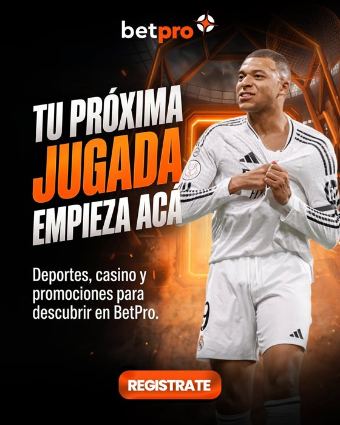
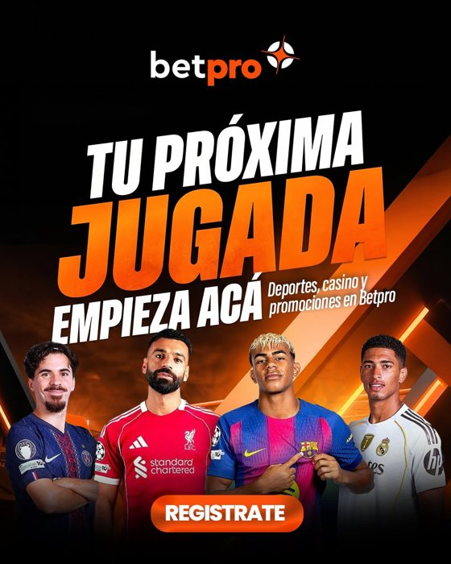

Qué contenido funciona y qué pedir ahora
Revisamos los 17 anuncios publicados desde el 20 de octubre para ver qué mensaje y qué formato traen más registros y depósitos, y de ahí sale qué tipo de contenido priorizar.
01 · Resumen
Ningún anuncio gana por mucho; el problema está más en el clic que en la pieza
Son pocos registros por anuncio (entre 0 y 19), así que lo que sigue son señales para probar, no conclusiones.
- Gasto en Registro
- L 15.11420 oct a 11 nov
- Registros con clic en 1 día
- 73La vara más exigente
- Costo por registro
- L 207$7,8 frente a la meta de $3 a $4
- Registros por cada 100 clics
- 3Casi todo se pierde después del clic
02 · Qué encontramos
Cuatro lecturas que cambian qué producir
1. El costo de $3 contaba registros sin clic
Mientras la campaña original contaba también a quien solo vio el anuncio, el costo se veía en $3. Con la misma regla (registro dentro de 1 día después del clic), en el público de Intereses el original costaba cerca de $9,7 y la réplica $7. Conviene fijar la meta de $3 a $4 sobre una sola regla de conteo.
2. Los videos traen clics baratos que casi no registran
Los dos videos de casino cuestan L1,5 y L2 por clic, la cuarta parte de un estático, pero solo entre 0,5% y 0,8% de esos clics termina en registro. Los estáticos que mejor funcionan registran entre 3% y 5% de sus clics.
3. Lo que mejor registra muestra el producto o una figura
«Todo en BetPro» (celular con la app) es el de menor costo por registro, y «Tu próxima jugada» con una figura del fútbol es el que más registros trae. Las ilustraciones deportivas con titular rinden menos.
4. En Depósito gana la presentadora con la promo
El video con la presentadora de la marca y «Ganancia anticipada» consiguió 16 depósitos con clic a L59 cada uno, con el 26% de la inversión. Ojo: el evento que medimos cuenta todos los depósitos, no solo el primero.
03 · Anuncios de Registro
Qué brilla y qué no, anuncio por anuncio
Registros contados solo cuando hubo clic en el anuncio dentro de 1 día, igual para todos. Cada anuncio junta sus copias en los distintos públicos. «Pocos datos» es menos de 10 registros.
| Anuncio | Gasto | Clics sobre vistas | Costo por clic | Registros | Registros por clic | Costo por registro | Lectura | |
|---|---|---|---|---|---|---|---|---|
 | Beneficios Persona con el celular frente a una ruleta | L 4.040 | 1.3% | L 7,2 | 19 | 3.4% | L 213 $8,0 | En el promedio |
 | Tu próxima jugada (1) Figura reconocida del fútbol | L 3.129 | 1.7% | L 6,2 | 17 | 3.4% | L 184 $6,9 | Mejor señal |
 | Todo en BetPro Celular con la app, en una escena de sala | L 1.664 | 1.0% | L 7,1 | 11 | 4.7% | L 151 $5,7 | Mejor señal |
 | Video casino: Mad Hit Video: personaje animado | L 1.427 | 2.7% | L 1,5 | 5 | 0.5% | L 285 $10,8 | Clics baratos, pocos registros |
 | Tu próxima jugada (2) Cuatro figuras reconocidas del fútbol | L 1.346 | 1.0% | L 8,0 | 7 | 4.2% | L 192 $7,3 | Pocos datos |
 | Ganancia anticipada (1) Jugador con cifras: 2 goles, 20 y 17 puntos | L 1.190 | 0.9% | L 6,6 | 6 | 3.4% | L 198 $7,5 | Pocos datos |
 | Deportes: básquet Ilustración deportiva con titular | L 1.174 | 2.1% | L 3,3 | 5 | 1.4% | L 235 $8,9 | Pocos datos |
 | Video casino: Aviatrix Video: mujer y juego de avioncito en pantalla | L 738 | 4.4% | L 2,0 | 3 | 0.8% | L 246 $9,3 | Clics baratos, pocos registros |
 | Deportes: fútbol Ilustración deportiva con titular | L 405 | 1.6% | L 4,3 | 0 | 0.0% | - | Sin registros |
Referencia: costo medio L207 por registro. El costo y los registros mezclan la campaña original y la réplica, ambas medidas con clic de 1 día.
04 · Anuncios de Depósito
La presentadora y el bono de casino son lo más barato
Depósitos contados con clic en 1 día. El evento de compra del píxel suma cada depósito, incluso los repetidos: no distingue el primero. Por eso estas lecturas son más flojas que las de Registro.
| Anuncio | Gasto | Clics sobre vistas | Costo por clic | Depósitos | Costo por depósito | Lectura | |
|---|---|---|---|---|---|---|---|
 | Video ganancia anticipada Video: presentadora de la marca con la promo en pantalla | L 941 | 2.3% | L 2,1 | 16 | L 59 | Mejor señal |
 | Cashback 50% (casino) Hombre en un casino, 50% de cashback | L 631 | 0.6% | L 7,1 | 7 | L 90 | Pocos datos |
 | Ganancia anticipada (2) Hombre celebrando con el celular, 20 puntos | L 538 | 1.9% | L 2,2 | 1 | L 538 | Flojo |
 | Bono 500% deportivo Jugador con camiseta de la marca, 500% + 100 giros | L 428 | 0.5% | L 9,5 | 2 | L 214 | Flojo |
| Bienvenida explosiva (A) Futbolista con trofeo, 500% | L 344 | 0.7% | L 7,0 | 6 | L 57 | Prometedor | |
 | Cashback 50% (sesión) Hombre celebrando, 50% de tus pérdidas | L 316 | 0.6% | L 8,1 | 5 | L 63 | Prometedor |
 | Bono 500% casino Persona con el celular y tragamonedas, 500% + 100 giros | L 229 | 1.1% | L 2,8 | 7 | L 33 | Prometedor |
| Bienvenida explosiva (B) Hombre de traje con billetes, 500% | L 153 | 0.7% | L 8,1 | 2 | L 77 | Pocos datos |
05 · Cansancio de los anuncios
En Depósito la gente ya vio todo tres o cuatro veces
Es lo que explica que pidamos materiales nuevos.
| Semana | Clics sobre vistas | Costo por mil vistas |
|---|---|---|
| 20 al 26 de octubre | 1,65% | L 38 |
| 27 de octubre al 2 de noviembre | 0,85% | L 44 |
| 3 al 9 de noviembre | 0,46% | L 43 |
El costo de mostrar el anuncio no cambió: lo que cayó fue el interés. Además, el público de remarketing (registrados sin depósito) tiene solo unos 1.000 usuarios, así que se satura rápido.
06 · Qué priorizar
Producir más de lo que ya funcionó
Con los materiales nuevos conviene priorizar estos tipos de contenido, en este orden. La referencia es la pieza que mejor resultado dio.
| # | Tipo de contenido | Referencia | Por qué | |
|---|---|---|---|---|
| 1 | | Producto en mano Celular con la app y las promos del mes | Todo en BetPro | El de menor costo por registro (L151) y 4,7% de registros por clic. |
| 2 | Figura del fútbol con la oferta Jugador o creador que el público reconozca, con derechos confirmados | Tu próxima jugada (1) | El que más registros trae (17) y el segundo mejor costo. | |
| 3 | | Presentadora con la promo, en video Un video corto por promoción vigente | Video ganancia anticipada | 16 depósitos a L59 con el 26% de la inversión de Depósito. |
| 4 | | Bono de bienvenida en tono de casino Persona con el celular y tragamonedas, oferta legible | Bono 500% casino | El menor costo por depósito (L33), con pocos datos: probar más. |
| 5 | | Videos de casino, con cierre de registro Mantener el gancho y terminar con oferta y botón | Video casino: Aviatrix | Clics a L2, pero solo 0,8% de los clics se registra: falta el cierre. |
Dejar de lado: Ilustraciones deportivas con titular, «Ganancia anticipada» estático en Depósito y «Bono 500% deportivo»: costaron más y rindieron menos. Toda pieza nueva lleva «+21», y las que muestran figuras reconocibles necesitan derechos de imagen confirmados. El cuadro de materiales con cantidades y estándares va aparte, en el Excel.
07 · Cómo lo revisamos
Una lectura corta, con fecha
| Cuándo | Qué miramos |
|---|---|
| 19 de noviembre | Si los públicos nuevos entregan, el costo por mil vistas y el alcance. Si subió el alcance y bajó la repetición de Registro. |
| 26 de noviembre | Costo por registro por público y por anuncio con los datos de las dos semanas. Qué piezas nuevas entraron y cómo arrancan. |
| Cuando haya medición | Repetir esta lectura con primer depósito, que es el resultado que importa para depósito. |